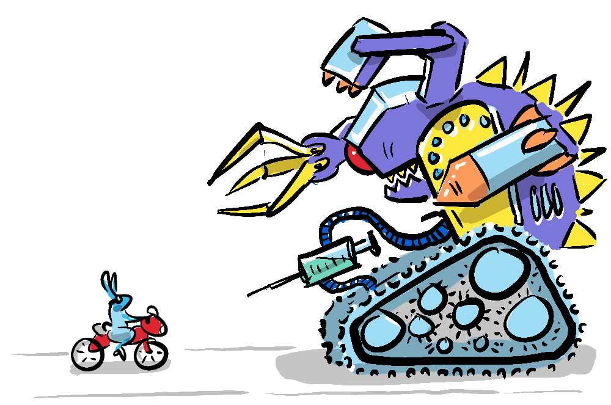
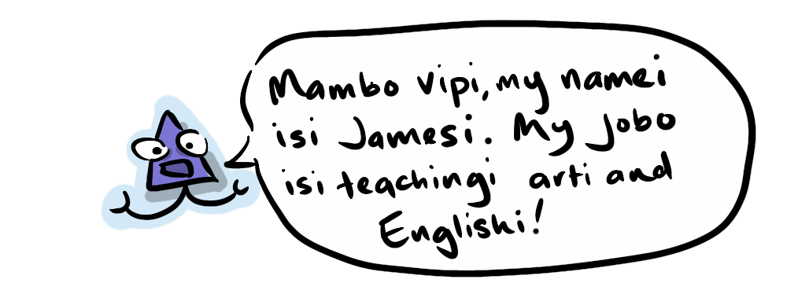
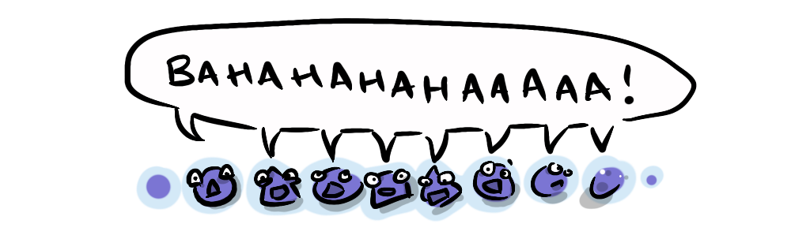
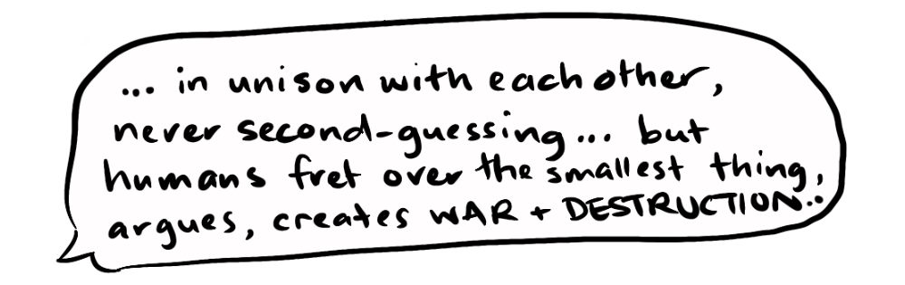
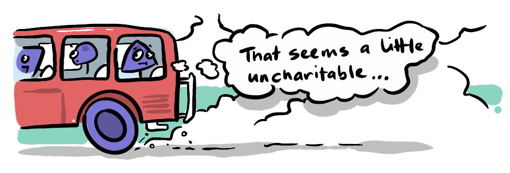
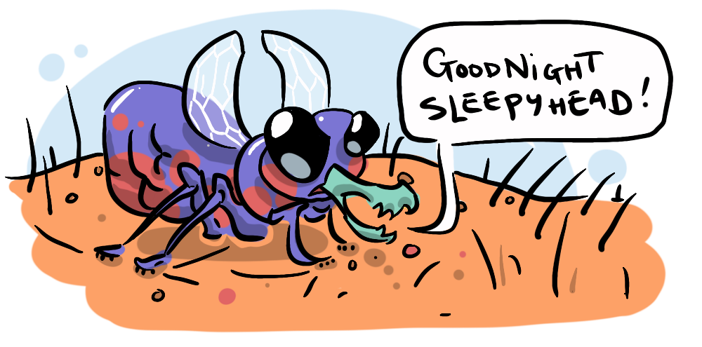
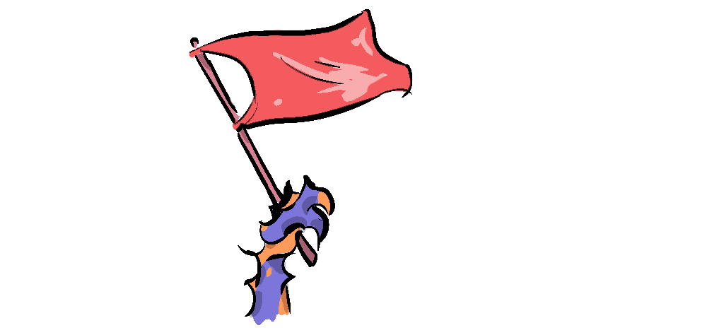
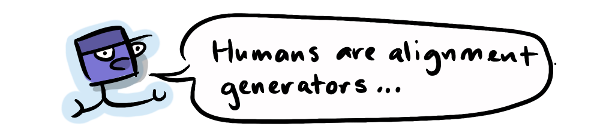

The following series of posts revisits the idea of goal alignment between humanity and artificial intelligence, and within humanity between the individual and the collective—which I explored in our first series The Alignment Problem No One is Talking about. If you are unfamiliar with what the alignment problem is (because you are a hermit crab living in an as yet undiscovered recess of the deepest ocean, comfortably nestled under a protective rock) the first post in that series is a good primer.

The ideas in this series are in-part an extension of and in-part an argument against the ideas in the first series—which took aim at our inability to get aligned with each other. Taking a more hopeful approach, this series looks at the issue from the perspective that humans might instead be uniquely equipped to create alignment. This is an idea brought to my attention by technologist and modern philosopher Emmett Shear, but it is one that I have felt-in-my-bones throughout my life.
So, while this series will deal with the largest existential threats humanity faces; the dark side of cooperation, the fracturing of civilisation, environmental collapse, Moloch and the meta-crisis, it will also reflect my inherent optimism tied to humanity's capacity for friendship. This journey (or "safari" if you will) begins in Africa.
In the final few months of 2007 a young idealistic version of me was volunteering in the idyllic coastal town of Bagamoyo, Tanzania, and during that time some of my fellow volunteers and I decided to do the Safari thing.
On our way to the Mikumi National Park, our guide Jacob—or Jako as we were all mistakenly calling him at the time...
If you'll permit me a short detour (I know it's much too early for an aside, but who knows, perhaps it will become a vital call-back later in the series, humour me): because Swahili words always end in a vowel, Tanzanians often add vowels when speaking english

I remember making this point to one of my students once, it took about 5 or 6 repetitions for him to realise he was doing it, and the look on his face when he did finally hear himself was priceless, his eyes opened like saucers and he burst into hysterical laugher as did the rest of the class.

So "Jako" was how Jacob pronounced his own name, and who were we to "correct" him... I digress).
...was waxing lyrical about the beautiful harmony of nature, pointing to many rose-tinted instances of animals just "being"...

And I couldn't help thinking

First of all, minutes later, a potentially deadly tsetse fly would bite me on the ankle, without hesitating at all to "second guess" the consequences it might have for me.
Thankfully the vector for sleeping sickness was not present in this area—a fact I was unaware of at the time of the bite (leading to many psychogenetic symptoms signally my imminent death throughout the day)... And only a few hours later we would be witnessing a lioness nose deep in a zebra's intestines just "being" in glorious unison with its recently deceased victim.

Furthermore we would, at times, have to creep very slowly and quitely so as not to startle a giraffe or springbok who were likely to take flight at the slightest hint of threat from a group of tourists who, in reality, wanted nothing more than to peacefully commune with them. Such behaviour makes perfect sense when you take into account the previous episode with the lioness and her zebra friend, but makes no sense rationally. These and the other "Wild Beasties" (which we eventually realised was Jako's pronunciation of "wildebeasts") are simply unable to discern between threatening and non-threatening members of a species to which they have an instinctive evolutionary response. In this way, just "being" can get in the way of making friends.

It's worth noting (as I'm sure it's occurred to you, dear reader) that taking flight from potential threats, including humans, has been of vital evolutionary benefit to these uneasy ungulates, and that more moderate megafauna did not fare so well, when they came in contact with humans. We will return to this point later in the series when we explore the danger well-aligned groups pose to others.
Humans, when not starving, indoctrinated or blinkered by an agricultural industry that hides the nasty means of production from people who crave palatable protein, generally want to make friends with animals. Personally, inter-species friendships are one of my favorite things in the world—as I explore in Furry Friends—interspecies camaraderie but part of what makes these so special is how rare and exceptional they are, and yet they are so universally appealing to humans.
My natural inclination when faced with a canine is to pet it. In fact, if I didn't know any better, my natural inclination when faced with a grizzly bear would be to pet it—we give teddy bears to children, after all. For sure, some children are wary even of domestic pets, either because they have had a bad experience or been told stories, but when given the opportunity they can overcome this fear and once they do, they prefer to be in harmony with the animal. In fact, when we see children who have the opposite inclination; a desire to harm animals, parents rightly interpret this is a red flag that their child might have something psychologically wrong with them.

It may seem comically naive to point to humans, who have wreaked so much havoc on the world and who perpetuate a meat industry that exploits billions of animals, as the most friendly species. But it is a fact that no other animal is as capable as humans are of cooperating with and living in harmony with other animals (when we are inclined to do so). As Emmett Shear states:

In the next post we will meet Emmett Shear, the technologist and modern philosopher mentioned in the introduction, and explore the idea that humans, with our social dynamics and intelligence, are uniquely suited to creating alignment, meaning that potentially our very nature might hold the key to the alignment problem.